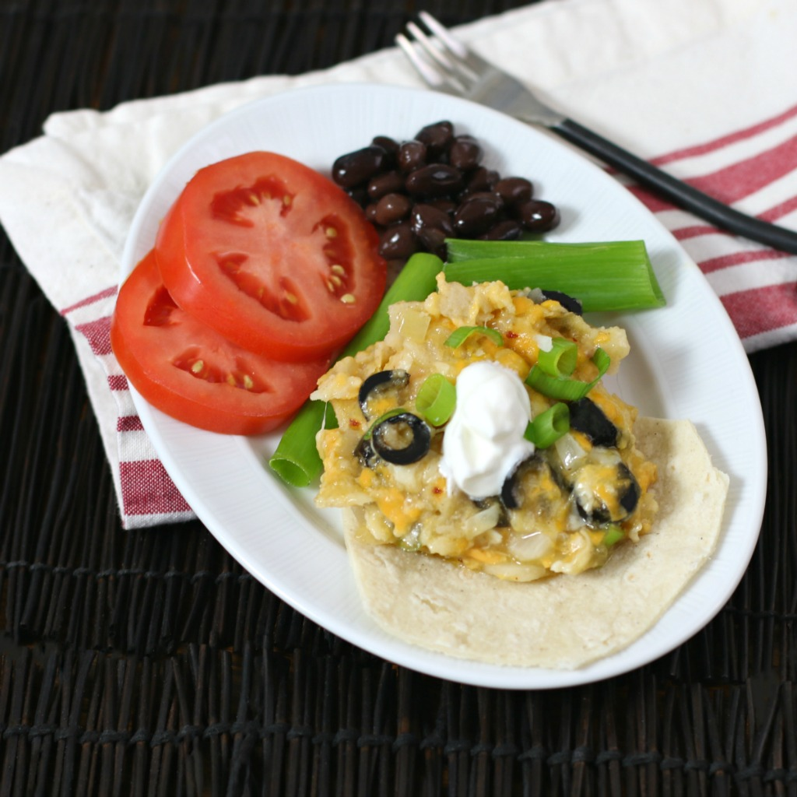

Cheesy Vegetarian Enchilada Casserole

Description
Quick and easy cheesy enchilada casserole.
Takes only 6 ingredients to make this popular one-pan amazing Mexican vegetarian dinner dish
Ingredients
- cooking spray
- 10 corn tortillas, cut into quarters
- 1 package sharp Cheddar cheese, cubed
- 1 can sliced black olives
- 1 can green chile enchilada sauce
- 2 cups shredded Mexican cheese blend
Steps
- Preheat oven to 375 degrees F (190 degrees C).
Spray an 8-inch baking dish with cooking spray.
- Arrange 1/3 of the tortillas over the bottom of the prepared dish.
Spread 1/2 the Cheddar cheese, onion, and olives over tortillas.
Spoon 1/3 of the green enchilada sauce and 1/3 of the Mexican cheese on top.
Repeat layering with 1/3 tortillas and the remaining Cheddar cheese, onion, and olives.
Spoon another third of the sauce and Mexican cheese on top.
Finish with the remaining tortillas, sauce, and Mexican cheese.
Cover with aluminum foil.
- Bake in the preheated oven for 15 minutes.
Remove foil and continue baking until cheese is bubbly on top, about 10 minutes more.